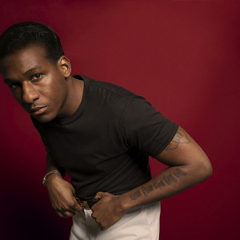

Todd Michael "Leon" Bridges (born July 13, 1989) is an American soul singer, songwriter and record producer from Fort Worth, Texas. He is best known for his song "Coming Home", which received regular airplay and was also a Top 10 Most Viral Track on Spotify. Bridges' debut album, also titled Coming Home, was released on June 23, 2015, on Columbia Records and subsequently nominated for Best R&B Album at the 58th Annual Grammy Awards.
Bridges's style is primarily soul, but resembling 1960s rhythm and blues. The Wall Street Journal described him as a "throwback to '60s-soul a la Otis Redding and Sam Cooke." Bridges performs in vintage clothing; Fort Worth Weekly described him as someone whose "music sounds like he looks."